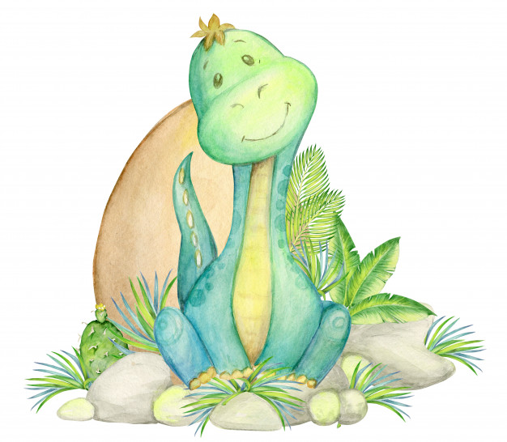

In a lost land of tropical forests, on top of the only mountain in the region, trapped inside an old volcanic crater system, lived the last ever group of large, ferocious dinosaurs. For thousands and thousands of years they had survived all the changes on Earth, and now, led by the great Ferocitaurus, they were planning to come out of hiding and to dominate the world once more. Ferocitaurus was an awesome Tyrannosaurus Rex who had decided they had spent too much time isolated from the rest of the world. So, over a few years, the dinosaurs worked together, demolishing the walls of the great crater. When the work was done, all the dinosaurs carefully sharpened their claws and teeth, in readiness to terrorise the world once again. On leaving their home of thousands of years, everything was new to them, very different to what they had been used to inside the crater. However, for days, the dinosaurs continued on, resolute.Finally, from the top of some mountains, they saw a small town. Its houses and townsfolk seemed like tiny dots. Never having seen human beings before, the dinosaurs leapt down the mountainside, ready to destroy anything that stood in their way... However, as they approached that little town, the houses were getting bigger and bigger... and when the dinosaurs finally arrived, it turned out that the houses were much bigger than the dinosaurs themselves. A boy who was passing by said: "Daddy! Daddy! I've found some tiny dinosaurs! Can I keep them?"And such is life. The terrifying Ferocitaurus and his friends ended up as pets for the village children. Seeing how millions of years of evolution had turned their species into midget dinosaurs, they learned that nothing lasted forever, and that you must always be ready to adapt.
